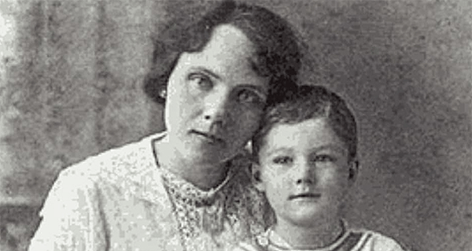

The Daily Case
The Mysterious Case of Bobby Dunbar
Atreyee Gupta
The Daily Case
Young child goes missing, the whole country starts looking for him, and eventually, the family gets him back, only to realize that he wasn’t their kid after all.
No, this isn’t the Invasion of the Body Snatchers or an episode of the Twilight Zone, but an actual event that happened in Louisiana in 1912 to the Dunbar family. And in the end, the truth was stranger than fiction.
On August 23, 1912, the Dunbars went on a day trip to Swayze Lake in Louisiana. As the family played in the water, suddenly little Bobby, only four years old, disappeared. Lessie and Percy Dunbar searched everywhere for their boy but were forced to call the authorities after their search turned up nothing.
The local police, and eventually the state police, began a statewide manhunt for the boy. They caught and dissected alligators and threw dynamite into the lake hoping it would eject the body from the water. None of their efforts turned up a body.
Then, eight months after Bobby’s disappearance, the Dunbars received good news — a boy matching Bobby’s description had been found in Mississippi.
A man named William Cantwell Walters, a traveling handyman, had been seen with the boy. When authorities caught up with him, he claimed the boy was Charles Bruce Anderson, the illegitimate child of his brother and a woman who worked for his family named Julia Anderson.
He claimed that the boy, who he referred to as Bruce, had been left in his care by Julia, while she left to go look for work. Many residents of the town backed Winter’s story up, but the police still arrested him and took the boy into custody.
The initial reunion between the boy and the Dunbars remains disputed to this day. One newspaper claimed it was joyful, and that the boy instantly shouted “Mother” upon seeing Lessie. Other accounts claim that both Lessie and Percy Dunbar were hesitant to confirm that the boy was Bobby.
The next day, after taking the boy home for the night and bathing him, Lessie Dunbar said that she had positively identified moles and scars on his body that confirmed he was her son. The police then allowed the Dunbars to take little Bobby back to their home.
However, a few days after the Dunbars had taken Bobby home, Julia Anderson herself showed up, backing up Walters’ claims that the boy was her son. She said she had allowed Walters to watch him for a few days while she looked for work, and that those few days had turned into months when she hadn’t been able to find any.
The police then called the Dunbars back, requesting that Bobby be a part of a lineup to see if Julia could correctly identify him.
She couldn’t. She asked whether he was the boy who had been found, but when she wasn’t given an answer, she admitted that she was unsure.
However, she returned the next day claiming that she was, in fact, confident that the boy identified as Bobby Dunbar was actually her son Bruce. News had already spread, though, that she had been hesitant the day before, and that the boy was living comfortably with the Dunbars. The courts were hesitant to bring the case back up.
Unable to pay for a court battle anyhow, Anderson returned to her home in North Carolina, leaving the boy with the Dunbars.
At this point, the Dunbars were fully confident that the child was Bobby. He had returned home and acclimated well, was playing with his brothers, and showed signs of remembering things at the house.
Because of this, Walters was convicted of kidnapping and spent two years in prison for his crime before his attorney appealed. Due to the cost of the first trial, the court declined to try him again instead of releasing him. Until the end of his life, he maintained his innocence in the case.
By now, it seems that everything was well and good. Bobby had been reunited with his family and was adjusting well. He grew up and got married, eventually having four children of his own before his death in 1966.
Though he had been told of the events that had happened during his childhood, family members recounted that he always maintained that he knew who he was and that he was Bobby Dunbar.
Reccomended Cases:
Mysterious Case of D.B. Cooper
Encyclopaedia Britannica